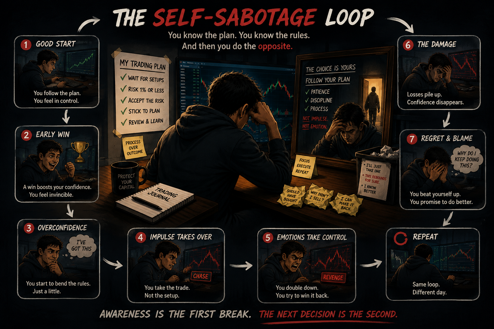

Trading Psychology
Self-Sabotage in Trading
Why we sometimes do the opposite of what we know we should do.
Self-sabotage often isn't a conscious decision to fail. It can begin when automatic habits, emotion, discomfort or a need for immediate relief override the process you already know.
1. The Self-Sabotage Loop

Loss, missed move, boredom, big winner, fear.
Fear, frustration, excitement, impatience, regret.
“Get out.” “Make it back.” “One more trade.”
Chase, exit early, move stop, increase size.
It feels better for a moment.
Missed winner, larger loss, overtrading, giveback.
“I knew better.”
2. What It Can Look Like
- Exit winners early because you're afraid the profit will disappear.
- Move stops because you don't want to be wrong.
- Revenge trade because you need to get your money back.
- Overtrade because you want action or stimulation.
- Chase moves you originally planned to wait for.
- Turn good days into bad days by keeping the pedal down.
3. The Hidden Reward
4. What the Research Found
- 66,465 accounts studied: the most active traders earned about 11.4% annually vs. 17.9% for the market. (Excessive trading was linked to overconfidence and worse results.)— Barber & Odean
- The disposition effect: investors tend to sell winners too early and hold losers too long (linked to regret, self-control and mental accounting).— Shefrin & Statman
- Behavioral reinforcement: bad process + good outcome can teach your brain to repeat the bad behavior until it eventually hurts.
5. Warning Signs
- You repeatedly think, “I knew I shouldn't have done that.”
- You move stops after entering.
- You exit good trades because it feels uncomfortable.
- You trade more when frustrated or bored.
- You increase size after losses.
- You chase moves you planned to wait for.
- You turn good days into bad days.
- Your objective shifts from finding an opportunity to recovering money.
- You understand your rules but keep breaking the same ones.
6. Interrupt the Pattern
- Cooldown after a loss.
- Predetermine risk and size.
- Define invalidation before entry.
- Use daily loss / profit limits.
- Trade only your setups.
- Reduce size when emotions are high.
7. Key Takeaway
Sometimes the chart really has changed. Sometimes only your emotional state has.
8. Go Deeper (optional reading & practice)
The subconscious side
Our brains create automatic patterns, habits and learned associations, that may once have protected us but can later work against us. We seek immediate relief, avoid discomfort and tend to repeat behavior that has been rewarded. In trading, that can mean acting before you've consciously worked through why you're acting.
The “Inner Saboteurs”
Shirzad Chamine's Positive Intelligence framework describes recurring mental patterns he calls “Saboteurs.” Tony Robbins has also discussed this framework. Applied to trading, some examples can look like:
HYPER-VIGILANT: Expects danger → struggles to hold winners.
RESTLESS: Needs stimulation → overtrades.
CONTROLLER: Needs certainty → struggles to accept risk or losses.
AVOIDER: Avoids pain → moves stops or refuses to take losses.
HYPER-ACHIEVER: Never enough → keeps trading, always wants more.
JUDGE: Harsh self-criticism → can trigger emotional decisions.
Practical exercise: catch your own loop
When you break a rule, don't just write “bad trade.” Record these four things:
- What happened immediately before it?
- What were you feeling?
- What did you do?
- What did that action give you immediately?
Find the pattern. Then build a rule around the trigger.
Why reinforcement matters
A rule-breaking trade that makes money can be especially dangerous because the profitable outcome can reward the behavior. That doesn't make the decision good. The lesson is to separate process from outcome: a bad decision can win once, and a good decision can lose once.
Research & further reading
- Barber & Odean — Trading Is Hazardous to Your Wealth — Read Study.
- Shefrin & Statman — The Disposition to Sell Winners Too Early and Ride Losers Too Long — Read Study.
- B. F. Skinner — operant-conditioning / reinforcement principles — Read Source.
- Shirzad Chamine — Positive Intelligence — View Book.
- Tony Robbins — discussion of mental “saboteurs” — Read Article.
As an Amazon Associate, Dagger Trading may earn from qualifying purchases.
Educational content only. This lesson discusses trading behavior and published research; it is not a clinical assessment, psychological advice or financial advice.